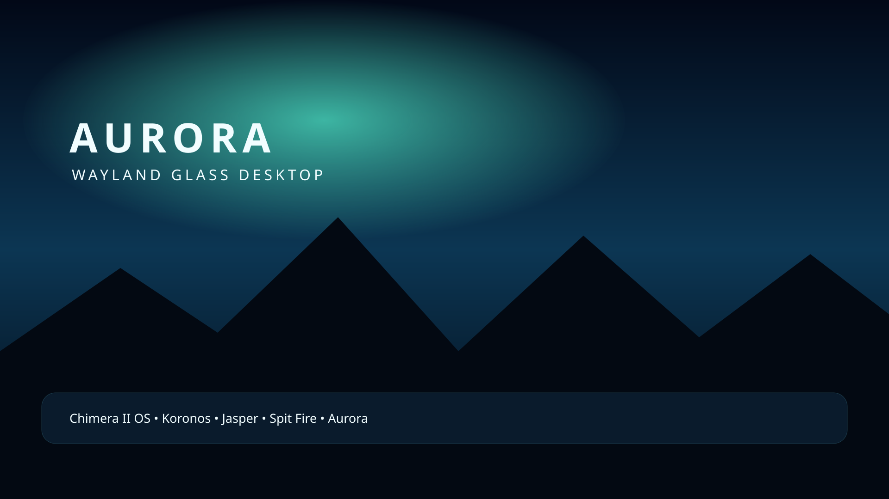
Chimera & Octavian Desktops
Interactive browser previews · Aurora and Marine sessions
Choose an OS and desktop profile to load its existing Web UI below. Use “Open full desktop” to launch the selected experience in its own tab. The separate Amiga page provides bootable 880 KiB CLI launcher disks for classic emulators.
ChimeraIIOS · Aurora
Open full desktop ↗Artwork library · both operating systems
Published desktop wallpapers, boot-stage illustrations, and shared application icon artwork. Each card links to its original asset or manifest.

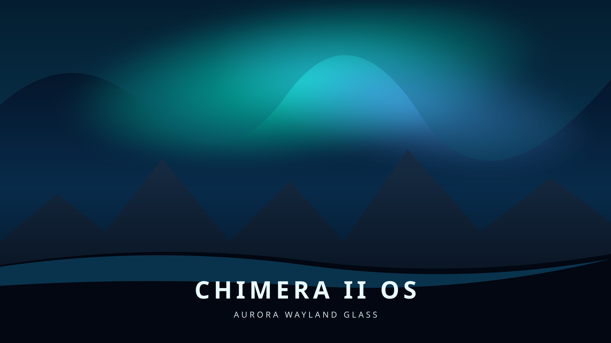

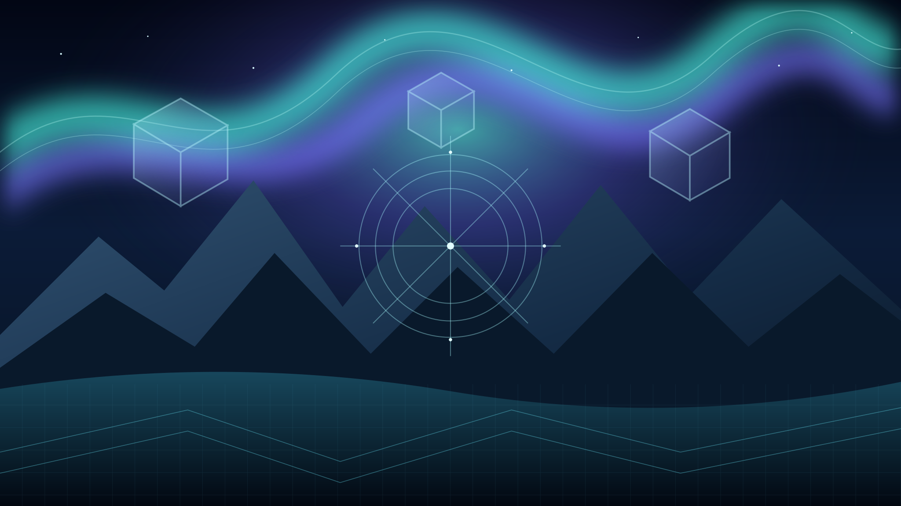

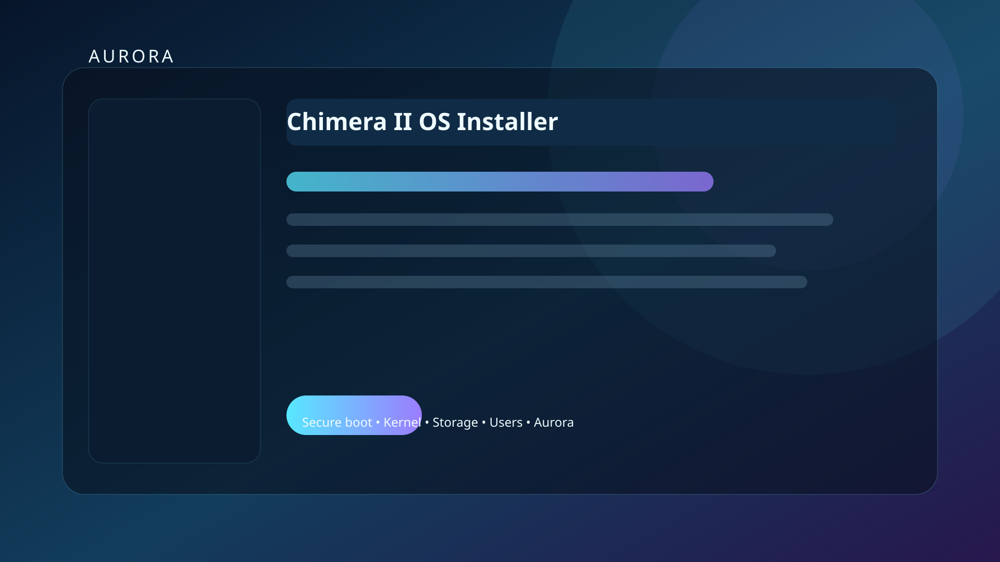

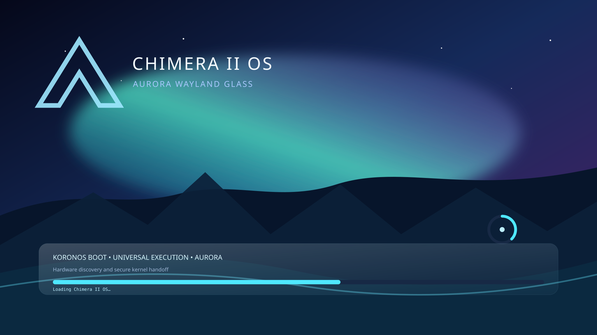

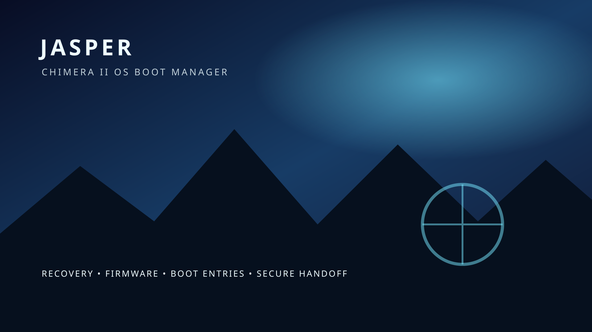

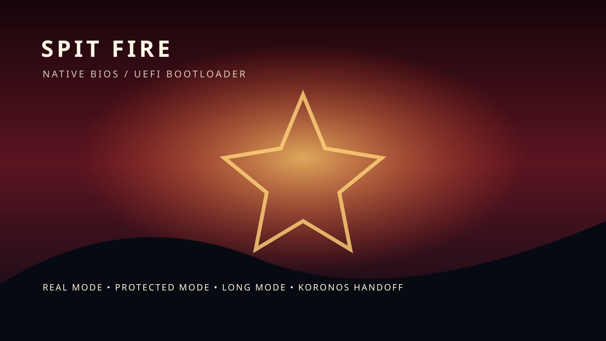

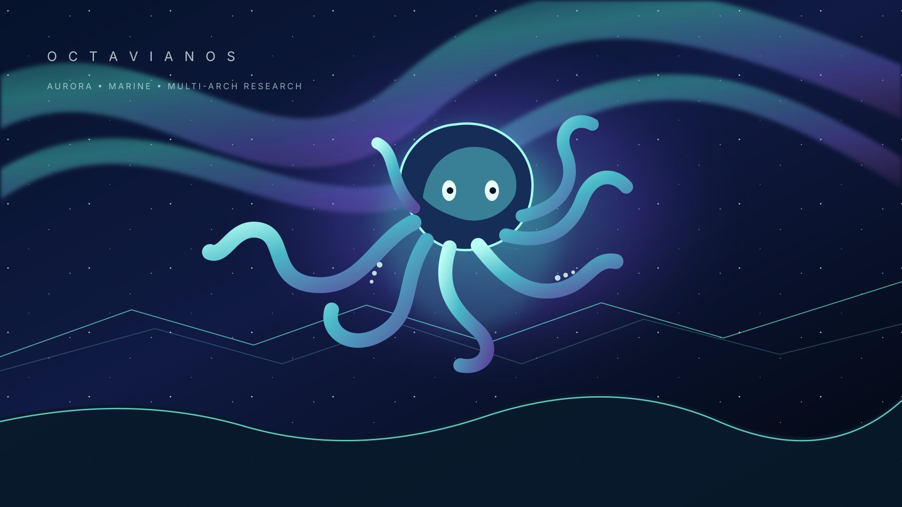
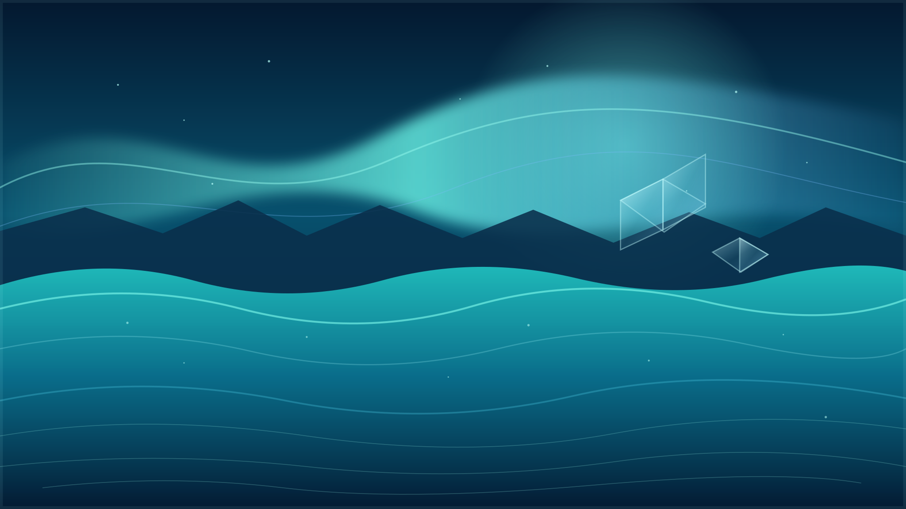

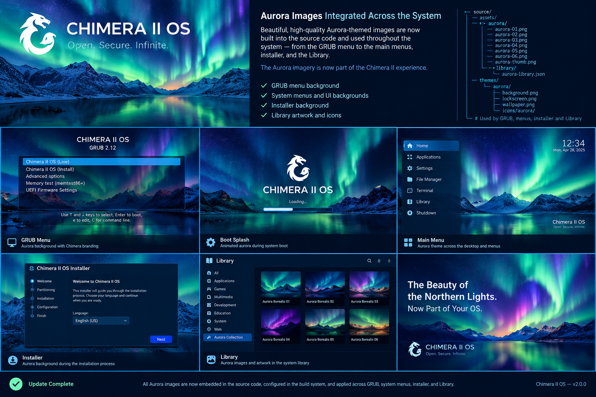

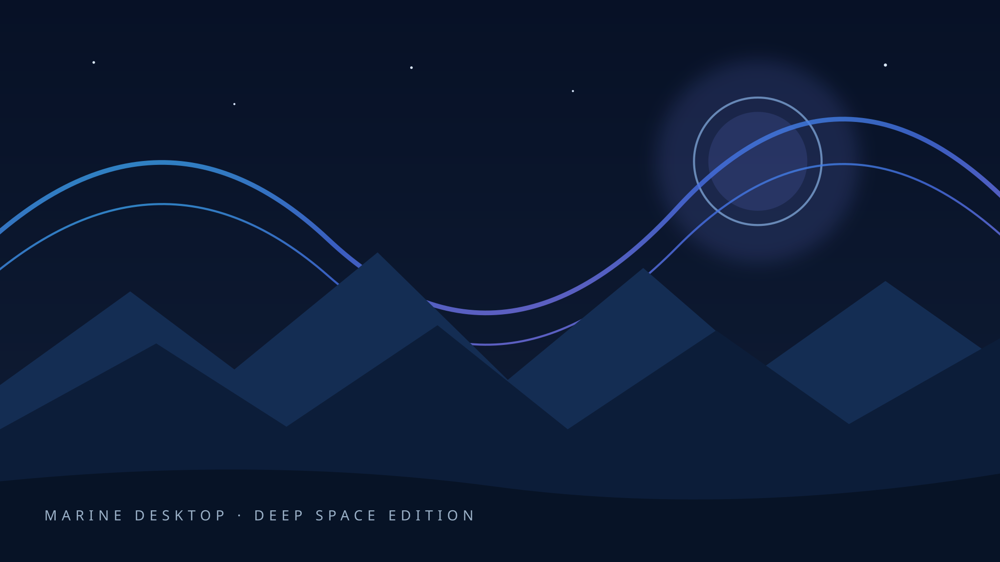

Source inventories: Chimera artwork publication manifest · Octavian artwork manifest · shared icon manifest.
Shared artwork and icons
The desktop pages use the imported Chimera/Octavian icon sprite and repository artwork where integrated. Browse the artwork and icon catalogue.
Web preview vs native runtime
These are browser-hosted desktop experiences. Their presence does not certify native Koronos graphics, X-server compatibility, hardware acceleration, application availability, or ISO release acceptance. Native status is tracked separately in build and release status.